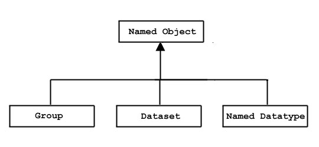

4.1. Introduction
As suggested by the name Hierarchical Data Format,
an HDF5 file is hierarchically structured.
The HDF5 group and link objects implement this hierarchy.
In the simple and most common case,
the file structure is a tree structure;
in the general case, the file structure may be a
directed graph with a designated entry point.
The tree structure is very similar to the file system
structures employed on UNIX systems, directories and files,
and on Apple Macintosh and Microsoft Windows systems,
folders and files.
HDF5 groups are analogous to the directories and folders;
HDF5 datasets are analogous to the files.
The one very important difference
between the HDF5 file structure and
the above-mentioned file system analogs
is that HDF5 groups are linked as a directed graph,
allowing circular references;
the file systems are strictly hierarchical,
allowing no circular references.
The figures below illustrate the range of possibilities.
In Figure 1, the group structure is strictly hierarchical,
identical to the file system analogs.
In Figures 2 and 3, the structure takes advantage of the
directed graph’s allowance of circular references.
In Figure 2, GroupA is not only
a member of the root group, /,
but a member of GroupC.
Since Group C is a member of Group B
and Group B is a member of Group A,
Dataset1 can be accessed by means of the circular reference
/Group A/Group B/Group C/Group A/Dataset1.
Figure 3 illustrates an extreme case in which
GroupB is a member of itself, enabling a
reference to a member dataset such as
/Group A/Group B/Group B/Group B/Dataset2.
|
Figure 1. An HDF5 file with a strictly hierarchical group structure
|
|
Figure 2. An HDF5 file with a directed graph group structure
including a circular reference
|
|
Figure 3. An HDF5 file with a directed graph group structure
and one group as a member of itself
|
As becomes apparent upon reflection,
directed graph structures can become quite complex;
caution is advised!
The balance of this chapter discusses the following topics:
- The HDF5 group object (or a group)
and its structure in more detail
- HDF5 link objects (or links)
- The programming model for working with groups and links
- HDF5 functions provided for working with groups, group members, and
links
- Retrieving information about objects in a group
- Discovery of the structure of an HDF5 file and the contained objects
- Examples of file structures
4.2. Description of the Group Object
4.2.1 The Group Object
Abstractly, an HDF5 group contains zero or more objects
and every object must be a member of at least one group.
The root group, the sole exception, may not belong to any group.
|
|
Figure 4. Abstract model of the HDF5 group object
|
Group membership is actually implemented via
link objects. See the figure above.
A link object is owned by a group and points to a
named object.
Each link has a name, and each link points to
exactly one object.
Each named object has at least one and possibly many links to it.
There are three classes of named objects: group,
dataset, and named datatype. See the figure below.
Each of these objects is the member of at least one group,
which means there is at least one link to it.

|
|
Figure 5. Classes of named objects
|
The primary operations on a group are to
add and remove members and to discover member objects.
These abstract operations, as listed in the figure below,
are implemented in the H5G APIs, as listed in section 4,
“Group Function Summaries.”
To add and delete members of a group,
links from the group to existing objects in the file
are created and deleted with the
link and unlink operations.
When a new named object is created,
the HDF5 Library executes the link operation in the background
immediately after creating the object
(i.e., a new object is added as a member of the group in which it
is created without further user intervention).
Given the name of an object, the get_object_info
method retrieves a description of the object,
including the number of references to it.
The iterate method iterates through the members of
the group, returning the name and type of each object.
| |
Group |
size:size_t |
create()
open()
close()
link()
unlink()
move()
iterate()
get_object_info()
get_link_info() |
| |
| |
Figure 6. The group object
| |
Every HDF5 file has a single root group, with the
name /. The root group is identical to any
other HDF5 group, except:
- The root group is automatically created when the
HDF5 file is created (
H5Fcreate).
- The root group has no parent, but, by convention
has a reference count of 1.
- The root group cannot be deleted (i.e., unlinked)!
4.2.2 The Hierarchy of Data Objects
An HDF5 file is organized as a rooted, directed graph using
HDF5 group objects. The named data objects are the nodes of the graph,
and the links are the directed arcs.
Each arc of the graph has a name, with the special name /
reserved for the root group.
New objects are created and then inserted into the graph with a link
operation tht is automatically executed by the library;
existing objects are inserted into the graph with a link operation
explicitly called by the user, which creates a named link from
a group to the object.
An object can be the target of more than one link.
The names on the links must be
unique within each group, but there may be
many links with the same name in different groups.
These are unambiguous, because some ancestor must have a different name,
or else they are the same object.
The graph is navigated with path names, analogous to Unix file
systems (see section 2.3,
“HDF5 Path Names”).
An object can be opened with a full path starting
at the root group, or with a relative path and a starting point.
That starting point is always a group, though it may be the
current working group, another specified group, or
the root group of the file.
Note that all paths are relative to a single HDF5 file.
In this sense, an HDF5 file is analogous to a single UNIX file system.
1
It is important to note that, just like the UNIX file system,
HDF5 objects do not have names, the names are associated
with paths.
An object has an object identifier that is unique within the file,
but a single object may have many names because there may be
many paths to the same object.
An object can be renamed, or moved to another group, by adding and
deleting links. In this case, the object itself never moves.
For that matter, membership in a group has no implication
for the physical location of the stored object.
Deleting a link to an object does not
necessarily delete the object.
The object remains available as long as there is at least one link to it.
After all links to an object are deleted, it can no longer be opened,
and the storage may be reclaimed.
It is also important to realize that the linking mechanism
can be used to construct very complex graphs of objects.
For example, it is possible for object to be shared between several
groups and even to have more than one name in the same group.
It is also possible for a group to be a member of itself,
or to create other cycles in the graph, such as
in the case where a child group is linked to one of its ancestors.
HDF5 also has soft links similar to UNIX soft links.
A soft link is an object that has a name and a path name for
the target object. The soft link can be followed to open the target
of the link just like a regular or hard link.
The differences are that the hard link cannot be created if the
target object does not exist and it always points to the same object.
A soft link can be created with any path name, whether or not the
object exists; it may or may not, therefore, be possible to follow
a soft link.
Furthermore, a soft link’s target object may be changed.
4.2.3 HDF5 Path Names
The structure of the HDF5 file constitutes the name space
for the objects in the file.
A path name is a string of components separated by slashes
(/).
Each component is the name of a hard or soft link which points to
an object in the file.
The slash not only separates the components, but indicates their
hierarchical releationship; the component indicated by the link name
following a slash is a always a member of the component indicated by
the link name preceding that slash.
The first component in the path name may be any of the following:
- the special character dot (
., a period),
indicating the current group
- the special character slash (
/),
indicating the root group
- any member of the current group
Component link names may be any string of ASCII characters
not containing a slash or a dot
(/ and ., which are reserved as noted above).
However, users are advised to avoid the use of punctuation and
non-printing characters, as they may create problems for other software.
The figure below provides a BNF grammar for HDF5 path names.
PathName ::= AbsolutePathName | RelativePathName
Separator ::= "/" ["/"]*
AbsolutePathName ::= Separator [ RelativePathName ]
RelativePathName ::= Component [ Separator RelativePathName ]*
Component ::= "." | Characters
Characters ::= Character+ - { "." }
Character ::= {c: c Î { { legal ASCII characters } - {'/'} }
|
Figure 7. A BNF grammar for HDF5 path names
|
An object can always be addressed by a either a
full or absolute path name, starting at the root group,
or by a relative path name, starting in a known location
such as the current working group.
As noted elsewhere, a given object may have multiple full and
relative path names.
Consider, for example, the file illustrated in the figure below.
Dataset1 can be identified by either of these
absolute path names:
/GroupA/Dataset1
/GroupA/GroupB/GroupC/Dataset1
Since an HDF5 file is a directed graph structure, and is therefore
not limited to a strict tree structure, and
since this illustrated file includes the sort of circular reference
that a directed graph enables,
Dataset1 can also be identified by this absolute path name:
/GroupA/GroupB/GroupC/GroupA/Dataset1
Alternatively, if the current working location is GroupB,
Dataset1 can be identified by either of these
relative path names:
GroupC/Dataset1
GroupC/GroupA/Dataset1
Note that relative path names in HDF5 do not employ the
../ notation, the UNIX notation indicating a
parent directory, to indicate a parent group.
|
Figure 8.
An HDF5 file with a directed graph group structure
including a circular reference
|
4.2.4 Group Implementations in HDF5
The original HDF5 group implementation provided
a single indexed structure for link storage.
A new group implementation, in HDF5 Release 1.8.0,
enables more efficient compact storage for very small groups,
improved link indexing for large groups,
and other advanced features.
- The original indexed format remains the default.
Links are stored in a B-tree in the group’s local heap.
- Groups created in the new compact-or-indexed format,
the implementation introduced with Release 1.8.0,
can be tuned for performance,
switching between the compact and indexed formats
at thresholds set in the user application.
- The compact format will conserve file space
and processing overhead when working with small groups and
is particularly valuable when a group contains no links.
Links are stored as a list of messages in the group’s
header.
- The indexed format will yield improved performance
when working with large groups, e.g., groups containing
thousands to millions of members.
Links are stored in a fractal heap and
indexed with an improved B-tree.
- The new implementation also enables the use of link names
consisting of non-ASCII character sets
(see
H5Pset_char_encoding)
and is required for all link types other than hard or soft links,
e.g., external and user-defined links
(see the H5L APIs).
The original group structure and the newer structures
are not directly interoperable.
By default, a group will be created in the original indexed format.
An existing group can be changed to a compact-or-indexed format
if the need arises; there is no capability to change back.
As stated above, once in the compact-or-indexed format,
a group can switch between compact and indexed as needed.
Groups will be initially created in the compact-or-indexed format
only when one or more of the following conditions is met:
An existing group, currently in the original indexed format,
will be converted to the compact-or-indexed format
upon the occurrence of any of the following events:
- An external or user-defined link is inserted into the group.
- A link named with a string composed of non-ASCII characters
is inserted into the group.
The compact-or-indexed format offers performance improvements
that will be most notable at the extremes,
i.e., in groups with zero members
and in groups with tens of thousands of members.
But measurable differences may sometimes appear
at a threshold as low as eight group members.
Since these performance thresholds and criteria differ from
application to application, tunable settings are provided to
govern the switch between the compact and indexed formats
(see
H5Pset_link_phase_change).
Optimal thresholds will depend on the application and the
operating environment.
Future versions of HDF5 will retain the ability to
create, read, write, and manipulate
all groups stored in either the original indexed format or
the compact-or-indexed format.
4.3. Using h5dump
You can use h5dump, the command-line utility
distributed with HDF5, to examine a file for purposes either of
determining where to create an object within an HDF5 file or
to verify that you have created an object in the intended place.
inspecting the contents of an HDF5 file.
In the case of the new group created in section 5.1,
“Creating a group,”
the following h5dump command will display the
contents of FileA.h5:
h5dump FileA.h5
Assuming that the discussed objects, GroupA and
GroupB are the only objects that exist in
FileA.h5, the output will look something like the
following:
HDF5 "FileA.h5" {
GROUP "/" {
GROUP GroupA {
GROUP GroupB {
}
}
}
}
h5dump is fully described on the
Tools page of the
HDF5 Reference Manual.
The HDF5 DDL grammar is fully described in the document
DDL in BNF for HDF5,
an element of this HDF5 User’s Guide.
4.4. Group Function Summaries
Functions that can be used with groups (H5G functions) and property
list functions that can used with groups (H5P functions) are listed below.
A number of group functions have been deprecated. Most of these have become
link (H5L) or object (H5O) functions. These replacement functions are also
listed below.
|
Function Listing 1. Group functions (H5G) |
|
C Function
Fortran Function
| |
Purpose
|
|
H5Gcreate
h5gcreate_f
| |
Creates a new empty group and gives it a name. The C function is a
macro: see “API
Compatibility Macros in HDF5.”
|
|
H5Gcreate_anon
h5gcreate_anon_f
| |
Creates a new empty group without linking it into the file structure.
|
|
H5Gopen
h5gopen_f
| |
Opens an existing group for modification and returns a group
identifier for that group. The C function is a
macro: see “API
Compatibility Macros in HDF5.”
|
|
H5Gclose
h5gclose_f
| |
Closes the specified group.
|
|
H5Gget_create_plist
h5gget_create_plist_f
| |
Gets a group creation property list identifier.
|
|
H5Gget_info
h5gget_info_f
| |
Retrieves information about a group.
Use instead of H5Gget_num_objs.
|
|
H5Gget_info_by_idx
h5gget_info_by_idx_f
| |
Retrieves information about a group according to the group’s
position within an index.
|
|
H5Gget_info_by_name
h5gget_info_by_name_f
| |
Retrieves information about a group.
|
|
(none)
h5gget_obj_info_idx_f
| |
Returns name and type of the group member identified by its index.
Use with the h5gn_members_f function.
h5gget_obj_info_idx_f and h5gn_members_f
are the Fortran equivalent of
the C function H5Literate.
|
|
(none)
h5gn_members_f
| |
Returns the number of group members.
Use with the h5gget_obj_info_idx_f function.
|
|
|
Function Listing 2. Link (H5L) and object (H5O) functions
|
|
C Function
Fortran Function
| |
Purpose
|
|
H5Lcreate_hard
h5lcreate_hard_f
| |
Creates a hard link to an object.
Replaces H5Glink and H5Glink2.
|
|
H5Lcreate_soft
h5lcreate_soft_f
| |
Creates a soft link to an object.
Replaces H5Glink and H5Glink2.
|
|
H5Lcreate_external
h5lcreate_external_f
| |
Creates a soft link to an object in a different file.
Replaces H5Glink and H5Glink2.
|
|
H5Lcreate_ud
(none)
| |
Creates a link of a user-defined type.
|
|
H5Lget_val
(none)
| |
Returns the value of a symbolic link.
Replaces H5Gget_linkval.
|
|
H5Literate
h5literate_f
| |
Iterates through links in a group.
Replaces H5Giterate.
See also H5Ovisit and H5Lvisit.
|
|
H5Literate_by_name
h5literate_by_name_f
| |
Iterates through links in a group.
|
|
H5Lvisit
(none)
| |
Recursively visits all links starting from a specified group.
|
|
H5Ovisit
h5ovisit_f
| |
Recursively visits all objects accessible from a specified object.
|
|
H5Lget_info
h5lget_info_f
| |
Returns information about a link.
Replaces H5Gget_objinfo.
|
|
H5Oget_info
(none)
| |
Retrieves the metadata for an object specified by an identifier.
Replaces H5Gget_objinfo.
|
|
H5Lget_name_by_idx
h5lget_name_by_idx_f
| |
Retrieves name of the nth link in a group, according to the order
within a specified field or index.
Replaces H5Gget_objname_by_idx.
|
|
H5Oget_info_by_idx
(none)
| |
Retrieves the metadata for an object, identifying the object by an
index position.
Replaces H5Gget_objtype_by_idx.
|
|
H5Oget_info_by_name
h5oget_info_by_name_f
| |
Retrieves the metadata for an object, identifying the object by
location and relative name.
|
|
H5Oset_comment
(none)
| |
Sets the comment for specified object.
Replaces H5Gset_comment.
|
|
H5Oget_comment
(none)
| |
Gets the comment for specified object.
Replaces H5Gget_comment.
|
|
H5Ldelete
h5ldelete_f
| |
Removes a link from a group.
Replaces H5Gunlink.
|
|
H5Lmove
h5lmove_f
| |
Renames a link within an HDF5 file.
Replaces H5Gmove and H5Gmove2.
|
|
|
Function Listing 3. Group creation property list functions (H5P)
|
|
C Function
Fortran Function
| |
Purpose
|
|
H5Pall_filters_avail
(none)
| |
Verifies that all required filters are available.
|
|
H5Pget_filter
h5pget_filter_f
| |
Returns information about a filter in a pipeline. The C function
is a macro: see “API
Compatibility Macros in HDF5.”
|
|
H5Pget_filter_by_id
h5pget_filter_by_id_f
| |
Returns information about the specified filter. The C function
is a macro: see “API
Compatibility Macros in HDF5.”
|
|
H5Pget_nfilters
h5pget_nfilters_f
| |
Returns the number of filters in the pipeline.
|
|
H5Pmodify_filter
h5pmodify_filter_f
| |
Modifies a filter in the filter pipeline.
|
|
H5Premove_filter
h5premove_filter_f
| |
Deletes one or more filters in the filter pipeline.
|
|
H5Pset_deflate
h5pset_deflate_f
| |
Sets the deflate (GNU gzip) compression method and compression
level.
|
|
H5Pset_filter
h5pset_filter_f
| |
Adds a filter to the filter pipeline.
|
|
H5Pset_fletcher32
h5pset_fletcher32_f
| |
Sets up use of the Fletcher32 checksum filter.
|
|
H5Pset_fletcher32
h5pset_fletcher32_f
| |
Sets up use of the Fletcher32 checksum filter.
|
|
H5Pset_link_phase_change
h5pset_link_phase_change_f
| |
Sets the parameters for conversion between compact and dense groups.
|
|
H5Pget_link_phase_change
h5pget_link_phase_change_f
| |
Queries the settings for conversion between compact and dense groups.
|
|
H5Pset_est_link_info
h5pset_est_link_info_f
| |
Sets estimated number of links and length of link names in a group.
|
|
H5Pget_est_link_info
h5pget_est_link_info_f
| |
Queries data required to estimate required local heap or object
header size.
|
|
H5Pset_nlinks
h5pset_nlinks_f
| |
Sets maximum number of soft or user-defined link traversals.
|
|
H5Pget_nlinks
h5pget_nlinks_f
| |
Retrieves the maximum number of link traversals.
|
|
H5Pset_link_creation_order
h5pset_link_creation_order_f
| |
Sets creation order tracking and indexing for links in a group.
|
|
H5Pget_link_creation_order
h5pget_link_creation_order_f
| |
Queries whether link creation order is tracked and/or indexed
in a group.
|
|
H5Pset_create_intermediate_group
h5pset_create_inter_group_f
| |
Specifies in the property list whether to create missing intermediate
groups.
|
|
H5Pget_create_intermediate_group
(none)
| |
Determines whether the property is set to enable creating missing
intermediate groups.
|
|
H5Pset_char_encoding
h5pset_char_encoding_f
| |
Sets the character encoding used to encode a string.
Use to set ASCII or UTF-8 character encoding for object names.
|
|
H5Pget_char_encoding
h5pget_char_encoding_f
| |
Retrieves the character encoding used to create a string.
|
|
|
Function Listing 4. Other external link functions
|
|
C Function
Fortran Function
| |
Purpose
|
|
H5Pset/get_elink_file_cache_size
(none) | |
Sets/retrieves the size of the external link open file cache
from the specified file access property list. |
|
H5Fclear_elink_file_cache
(none) | |
Clears the external link open file cache for a file.
|
|
4.5. Programming Model: Working with Groups
The programming model for working with groups is as follows:
- Create a new group or open an existing one.
- Perform the desired operations on the group.
- Create new objects in the group.
- Insert existing objects as group members.
- Delete existing members.
- Open and close member objects.
- Access information regarding member objects.
- Iterate across group members.
- Manipulate links.
- Terminate access to the group. (Close the group.)
4.5.1 Creating a Group
To create a group, use H5Gcreate, specifying the
location and the path of the new group.
The location is the identifier of the file or the group in a file
with respect to which the new group is to be identified.
The path is a string that provides wither an absolute path or a
relative path to the new group (see section 2.3,
“HDF5 Path Names”).
A path that begins with a slash (/) is an absolute path
indicating that it locates the new group from the root group of the
HDF5 file.
A path that begins with any other character is a relative path.
When the location is a file, a relative path is a path from that
file’s root group;
when the location is a group, a relative path is a path from that group.
The sample code in the example below creates three groups.
The group Data is created in the root directory;
two groups are then created in /Data,
one with absolute path, the other with a relative path.
hid_t file;
file = H5Fopen(....);
group = H5Gcreate(file, "/Data", H5P_DEFAULT, H5P_DEFAULT, H5P_DEFAULT);
group_new1 = H5Gcreate(file, "/Data/Data_new1", H5P_DEFAULT, H5P_DEFAULT,
H5P_DEFAULT);
group_new2 = H5Gcreate(group, "Data_new2", H5P_DEFAULT, H5P_DEFAULT,
H5P_DEFAULT);
|
|
Example 1. Creating three new groups
|
The third H5Gcreate parameter optionally specifies
how much file space to reserve to store the names that will
appear in this group. If a non-positive value is supplied,
a default size is chosen.
4.5.2 Opening a Group and Accessing an Object in that Group
Though it is not always necessary, it is often useful to explicitely
open a group when working with objects in that group. Using the file
created in the example above, the example below illustrates the use
of a previously-acquired file identifier and a path relative to that
file to open the group Data.
Any object in a group can be also accessed by its absolute or relative path.
To open an object using a relative path, an application must first open
the group or file on which that relative path is based.
To open an object using an absolute path, the application can use any
location identifier in the same file as the target object;
the file identifier is commonly used, but object identifier for any object
in that file will work.
Both of these approaches are illustrated in the example below.
Using the file created in the examples above,
the example below provides sample code illustrating the use of both
relative and absolute paths to access an HDF5 data object.
The first sequence (two function calls) uses a previously-acquired
file identifier to open the group Data, and
then uses the returned group identifier and a relative path to open
the dataset CData.
The second approach (one function call) uses the same previously-acquired
file identifier and an absolute path to open the same dataset.
group = H5Gopen(file, "Data", H5P_DEFAULT);
dataset1 = H5Dopen(group, "CData", H5P_DEFAULT);
dataset2 = H5Dopen(file, "/Data/CData", H5P_DEFAULT);
|
|
Example 2. Open a dataset with relative and absolute paths
|
4.5.3 Creating a Dataset in a Specific Group
Any dataset must be created in a particular group.
As with groups, a dataset may be created in a particular group
by specifying its absolute path or a relative path.
The example below illustrates both approaches to creating a
dataset in the group /Data.
dataspace = H5Screate_simple(RANK, dims, NULL);
dataset1 = H5Dcreate(file, "/Data/CData", H5T_NATIVE_INT,
dataspace, H5P_DEFAULT, H5P_DEFAULT, H5P_DEFAULT);
group = H5Gopen(file, "Data", H5P_DEFAULT);
dataset2 = H5Dcreate(group, "Cdata2", H5T_NATIVE_INT,
dataspace, H5P_DEFAULT, H5P_DEFAULT, H5P_DEFAULT);
|
|
Example 3. Create a dataset with absolute and relative paths
|
4.5.4 Closing a Group
To ensure the integrity of HDF5 objects and to release system
resources, an application should always call the appropriate
close function when it is through working with an HDF5 object.
In the case of groups, H5Gclose ends access to the group
and releases any resources the HDF5 Library has maintained
in support of that access, including the group identifier.
As illustrated in the example below, all that is required for an
H5Gclose call is the group identifier acquired when
the group was opened; there are no relative versus absolute path
considerations.
herr_t status;
status = H5Gclose(group);
|
|
Example 4. Close a group
|
A non-negative return value indicates that the group was successuflly
closed and the resources released; a negative return value indicates that
the attempt to close the group or release resources failed.
4.5.5 Creating Links
As previously mentioned, every object is created in a specific group.
Once created, an object can be made a member of additional groups by means
of links created with one of the H5Lcreate_* functions.
A link is, in effect, a path
by which the target object can be accessed; it therefore has a
name which functions as a single path component.
A link can be removed with an H5Ldelete call, effectively
removing the target object from the group that contained the link
(assuming, of course, that the removed link was the only link to the
target object in the group).
Hard Links
There are two kinds of links, hard links
and symbolic links.
Hard links are reference counted; symbolic links are not.
When an object is created, a hard link is automatically created.
An object can be deleted from the file by removing all the hard links to it.
Working with the file from the previous examples,
the code in the example below illustrates the creation of a hard link,
named Data_link, in the root group, /,
to the group Data.
Once that link is created, the dataset Cdata can be accessed
via either of two absolute paths, /Data/Cdata or
/Data_Link/Cdata.
status = H5Lcreate_hard(Data_loc_id, "Data", DataLink_loc_id, "Data_link",
H5P_DEFAULT, H5P_DEFAULT)
dataset1 = H5Dopen(file, "/Data_link/CData", H5P_DEFAULT);
dataset2 = H5Dopen(file, "/Data/CData", H5P_DEFAULT);
|
|
Example 5. Create a hard link
|
The example below shows example code to delete a link,
deleting the hard link Data from the root group.
The group /Data and its members are still in the file,
but they can no longer be accessed via a path using the component
/Data.
status = H5Ldelete(Data_loc_id, "Data", H5P_DEFAULT);
dataset1 = H5Dopen(file, "/Data_link/CData", H5P_DEFAULT);
/* This call should succeed; all path component still exist*/
dataset2 = H5Dopen(file, "/Data/CData", H5P_DEFAULT);
/* This call will fail; the path component '/Data' has been deleted*/
|
|
Example 6. Delete a link
|
When the last hard link to an object is deleted, the object is no longer
accessible. H5Ldelete will not prevent you from deleting
the last link to an object. To see if an object has only one link,
use the H5Oget_info function. If the value of the rc
(reference count) field in the is greater than 1, then the link can
be deleted without making the object inaccessible.
The example below shows H5Oget_info
to the group originally called Data.
status = H5Oget_info(Data_loc_id, object_info);
|
|
Example 7. Finding the number of links to an object
|
It is possible to delete the last hard link to an object and not make
the object inaccessible. Suppose your application opens a dataset, and
then deletes the last hard link to the dataset. While
the dataset is open, your application still has a connection to the
dataset. If your application creates a hard link to the dataset before
it closes the dataset, then the dataset will still be accessible.
Symbolic Links
Symbolic links are objects that assign a name
in a group to a path.
Notably, the target object is determined only when the symbolic link is accessed,
and may, in fact, not exist. Symbolic links are not reference counted,
so there may be zero, one, or more symbolic links to an object.
The major types of symbolic links are soft links and external links. Soft
links are symbolic links within an HDF5 file and are created with the
H5Lcreate_soft function. Symbolic links to
objects located in external files, in other words external links, can be
created with the H5Lcreate_external function. Symbolic links
are removed with the H5Ldelete function.
The example below shows the creating two soft links to the
group /Data.
status = H5Lcreate_soft(path_to_target, link_loc_id, "Soft2", H5P_DEFAULT, H5P_DEFAULT);
status = H5Lcreate_soft(path_to_target, link_loc_id, "Soft3", H5P_DEFAULT, H5P_DEFAULT);
dataset = H5Dopen(file, "/Soft2/CData", H5P_DEFAULT);
|
|
Example 8. Create a soft link
|
With the soft links defined in the example above, the dataset CData
in the group /Data can now be opened with any of the names
/Data/CData, /Soft2/CData, or
/Soft3/CData.
In release 1.8.7, a cache was added to hold the names of files
accessed via external links. The size of this cache can be changed
to help improve performance. For more information, see the entry
in the
HDF5 Reference Manual for the
H5Pset_elink_file_cache_size function call.
Note Regarding Hard Links and Soft Links
Note that an object’s existence in a file is governed by the presence
of at least one hard link to that object.
If the last hard link to an object is removed, the object is removed
from the file and any remaining soft link becomes a
dangling link, a link whose target
object does not exist.
Moving or Renaming Objects, and a Warning
An object can be renamed by changing the name of a link to it with
H5Lmove.
This has the same effect as creating a new link with the new name and
deleting the link with the old name.
Exercise caution in the use of H5Lmove
and H5Ldelete as these functions each include a step that
unlinks a pointer to an HDF5 object.
If the link that is removed is on the only path leading to an HDF5 object,
that object will become permanently inaccessible in the file.
Scenario 1: Removing the Last Link
To avoid removing the last link to an object or otherwise making an
object inaccessible, use the H5Oget_info
function. Make sure that the value of the reference count field (rc) is
greater than 1.
Scenario 2: Moving a Link that Isolates an Object
Consider the following example: assume that the group group2
can only be accessed via the following path, where top_group
is a member of the file’s root group:
/top_group/group1/group2/
Using H5Lmove, top_group
is renamed to be a member of group2. At this point,
since top_group was the only route from the root group to
group1, there is no longer a path by which one can access
group1, group2, or any member datasets.
And since top_group is now a member of group2,
top_group itself and any member datasets have thereby also
become inaccessible.
Mounting a File
An external link is a permanent connection between two files. A
temporary connection can be set up with the H5Fmount
function. For more information, see the
“The HDF5 File” chapter,
and the H5Fmount function in the
HDF5 Reference Manual.
4.5.6 Discovering Information about Objects
There is often a need to retrieve information about a particular object.
The H5Lget_info and H5Oget_info functions fill
this niche by returning a description of the object or link in an
H5L_info_t or H5O_info_t structure.
4.5.7 Discovering Objects in a Group
To examine all the objects or links in a group,
use the H5Literate or H5Ovisit functions to
examine the objects, and use
the H5Lvisit function to examine the links.
H5Literate is useful both with a single group and
in an iterative process that examines an entire file
or section of a file (such as the contents of a group or the contents
of all the groups that are members of that group)
and acts on objects as they are encountered. H5Ovisit
recursively visits all objects accessible from a specified object.
H5Lvisit recursively visits all the links starting from a
specified group.
4.5.8 Discovering All the Objects in the File
The structure of an HDF5 file is
self-describing,
meaning that an application can navigate an HDF5 file
to discover and understand all the objects it contains.
This is an iterative process wherein the structure is traversed as a graph,
starting at one node and recursively visiting linked nodes.
To explore the entire file, the traversal should start at the root group.
4.6. Examples of File Structures
This section presents several samples of HDF5 file structures.
|
|
|
|
|
a) The file contains three groups:
the root group, /group1, and /group2.
|
|
b) The dataset dset1 (or /group1/dset1)
is created in /group1.
|

|
|
|
c) A link named dset2 to the same dataset
is created in /group2.
|
|
d) The link from /group1 to dset1 is removed.
The dataset is still in the file, but can be accessed only as
/group2/dset2.
|
|
|
Figure 9. Some file structures |
|
The figure above shows examples of the structure of a file with three groups
and one dataset. The file in Figure 9a contains three groups:
the root group and two member groups.
In Figure 9b, the dataset dset1 has been created
in /group1.
In Figure 9c, a link named dset2 from /group2
to the dataset has been added.
Note that there is only one copy of the dataset;
there are two links to it and it can be accessed either as
/group1/dset1 or as /group2/dset2.
Figure 9d above illustrates that one of the two links to the dataset
can be deleted.
In this case, the link from /group1 has been removed.
The dataset itself has not been deleted; it is still in the file
but can only be accessed as /group1/dset2.
|
|
|
|
|
a) dset1 has two names:
/group2/dset1 and /group1/GXX/dset1.
|
|
b) dset1 again has two names:
/group1/dset1 and /group1/dset2.
|
|
|
|
|
c) dset1 has three names:
/group1/dset1, /group2/dset2,
and /group1/GXX/dset2.
|
|
d) dset1 has an infinite number of available path names.
|
|
|
Figure 10. More sample file structures
|
|
The figure above illustrates loops in an HDF5 file structure.
The file in Figure 10a contains three groups and a dataset;
group2 is a member of the root group and of the
root group’s other member group, group1.
group2 thus can be accessed by either of two paths:
/group2 or /group1/GXX.
Similarly, the dataset can be accessed either as
/group2/dset1 or as /group1/GXX/dset1.
Figure 10b illustrates a different case: the dataset is a
member of a single group but with two links, or names, in that group.
In this case, the dataset again has two names,
/group1/dset1 and /group1/dset2.
In Figure 10c, the dataset dset1 is a member of two groups,
one of which can be accessed by either of two names.
The dataset thus has three path names: /group1/dset1,
/group2/dset2, and /group1/GXX/dset2.
And in Figure 10d, two of the groups are members of
each other and the dataset is a member of both groups.
In this case, there are an infinite number of paths to the dataset
because GXX and GYY can be traversed
any number of times on the way from the root group, /,
to the dataset.
This can yield a path name such as
/group1/GXX/GYY/GXX/GYY/GXX/dset2.
|
|
|
|
|
|
a) The file contains only hard links. |
|
b) A soft link is added from group2
to /group1/dset1. |
|
|
|
|
c) A soft link named dset3 is added with a target
that does not yet exist. |
|
d) The target of the soft link is created or linked. |
|
|
Figure 11. Hard and soft links |
|
The figure above takes us into the realm of soft links.
The original file, in Figure 11a, contains only three hard links.
In Figure 11b, a soft link named dset2 from
group2 to /group1/dset1 has been created,
making this dataset accessible as /group2/dset2.
In Figure 11c, another soft link has been created in group2.
But this time the soft link, dset3, points to a target object
that does not yet exist.
That target object, dset, has been added in Figure 11d
and is now accessible as either /group2/dset or
/group2/dset3.
1It could be said
that HDF5 extends the organizing concepts of a file system to the
internal structure of a single file.